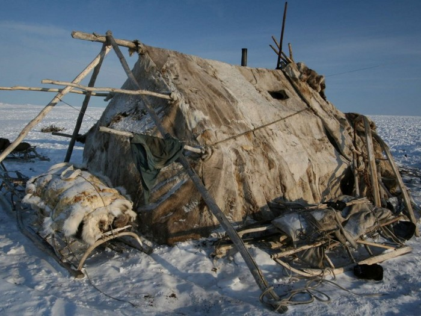
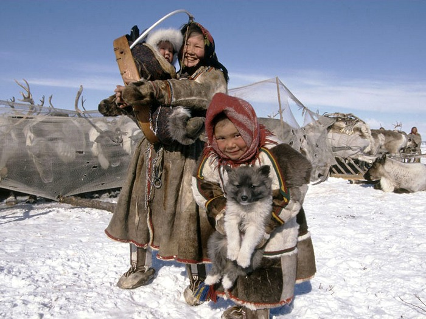

МАЛЫЕ НАРОДЫ СЕВЕРА РОССИИ
Коренны́е малочи́сленные наро́ды -понятие,
используемое для обозначения коренных народов, под которыми
понимаются «особые группы населения, проживающие на территориях традиционного
расселения их предков, сохраняющие традиционные образ жизни, хозяйствование и промыслы»
Начиная с XVI века в России для именования нерусского
населения, проживающего на осваиваемых первопроходцами окраинных землях, стали
использоваться слова «иноземцы», «иноверцы», «инородцы» и «туземцы»
в 28 субъектах Российской Федерации компактно
проживают 40 малочисленных народов Севера. Например:
Эвенки, нанайцы, ханты, вепсы, ненцы, шорцы,
чукчи, коряки, алеуты и т.д
Традиционно хозяйственная деятельность:
·
Животноводство, в том числе кочевое (оленеводство, коневодство, яководство, овцеводство).
·
Переработка продукции животноводства, включая сбор, заготовку и выделку
шкур, шерсти, волоса, окостенелых рогов, копыт, пантов, костей, эндокринных
желез, мяса, субпродуктов.
·
Собаководство (разведение оленегонных, ездовых и
охотничьих собак).
·
Разведение зверей, переработка и
реализация продукции звероводства.
·
Рыболовство (в том числе морской зверобойный
промысел) и реализация водных биологических ресурсов.
·
Промысловая охота, переработка и реализация охотничьей продукции.
·
Земледелие (огородничество), а также разведение и переработка ценных в лекарственном отношении растений.
·
Заготовка древесины и недревесных лесных ресурсов для
собственных нужд.
·
Собирательство (заготовка, переработка и реализация пищевых лесных ресурсов,
сбор лекарственных растений).
·
Добыча и переработка общераспространённых полезных ископаемых для собственных нужд.
·
Художественные промыслы и народные ремесла (кузнечное и
железоделательное ремесло, изготовление утвари, инвентаря, лодок, нарт, иных
традиционных средств передвижения, музыкальных инструментов, берестяных изделий,
чучел промысловых зверей и птиц, сувениров из меха оленей и промысловых зверей
и птиц, иных материалов, плетение из трав и иных растений, вязание сетей,
резьба по кости, резьба по дереву, пошив национальной одежды и другие виды
промыслов и ремесел, связанные с обработкой меха, кожи, кости и других
материалов).
·
Строительство национальных традиционных жилищ и других построек,
необходимых для осуществления традиционных видов хозяйственной деятельности.
Около 65 процентов граждан из числа малочисленных народов
Севера проживают в сельской местности.
В
местах традиционного проживания и традиционной хозяйственной деятельности
малочисленных народов Севера для обучения детей оленеводов, рыбаков и
охотников, в том числе на родном языке, действуют дневные общеобразовательные
школы, школы-интернаты. В местах кочевания оленеводов инициировано создание
кочевых школ, в которых дети получают начальное образование с учётом
традиционного образа жизни малочисленных народов Севера.
В
издательствах по государственному заказу издаётся учебно-методическая
литература для изучения языков малочисленных народов Севера.
обучение
детей в тундре
У
кочевников нет проблем с поиском жилья, с очередями в детский сад и с
выбором
школы для ребёнка: отдать ли его в ту, которая ближе к дому, или в ту,
которая
с английским уклоном? Государственное образование само «прилетает»
за
детьми на вертолёте и увозит на несколько учебных месяцев в школу-
интернат
ближайшего посёлка.
Система
школ-интернатов для коренных народов Севера и Дальнего Востока
начала
складываться в 1920-е годы, с приходом советской власти. В 20-е и 30-е
годы
интернаты были делом добровольным. Годов до 50-х родители часто
прятали
детей от делегаций из посёлков — никто не мог заставить отдать
ребёнка
в интернат, пока не появились вертолёты, которые наладили регулярное
сообщение
с самыми удалёнными районами тундры.

Жилище чукчей яранга — это шатер многоугольной формы, крытый
оленьими шкурами, мехом наружу.

Этот удивительный народ, во что бы то ни стало стремится сохранить свою культуру и самобытность.